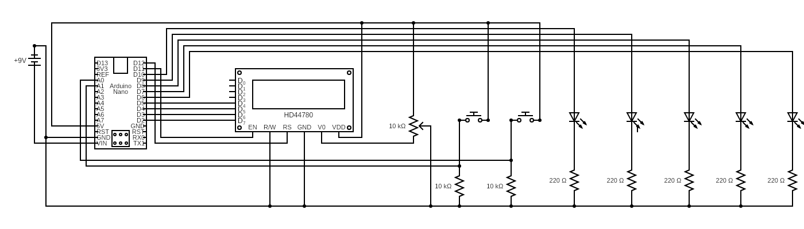

Cyclone Arcade Game
The Cyclone Arcade Game is a project I made in the principles of engineering class at my high school. Using an arduino, LEDs, a LCD, and some buttons I recreated the cyclone game from most arcades. LEDs move back and forth, and depending on what color LED you land on awards a certain amount of points. Red awards the least amount of points, then yellow, then green with the most. During each game the player has 5 tries to score as many points as possible.
There are two input buttons, a play button and a mode button. The play button starts the game, and stops the LED on the current color during game play. The mode button cycles through the different game modes within the start menu.
There are three game modes: easy, hard, and master. The different game modes increase the speed of the moving LED, and thus making it harder to land on the right LED. The points scale with the game mode, easy mode having less points than the rest of the modes
The LCD displays all the information about the game. This includes the start menu, which allows you to cycle through the different game modes, in addition to the in game screen. The in-game screen displays your current score and how many tries you have left.
The game ends when you run out of tries. The LCD is reset to the home screen where you can start the whole process again.
Pictures
Design Process
The original goal of the project was to design and program a “robot” restricted by the following constraints:
- Must be user friendly. Use of labels and/or directions allow for an “untrained” person to utilize the machine
- Must successfully meet the team's design statement
- Must be efficient and reliable
- Program must include pseudocode and filled out pltw template
- Program includes functions, while loops, if/else structures, and variables
- Must be able to run “untethered” from the computer
- Must include some autonomous component
While my project was an arcade game and not a robot, the project did meet the technical constraints of the projects.
Most of my classmates used components available within the classroom, however I supplied parts from my own collection. The VEX system has its limitations. The VEX cortex only works with VEX parts. This eliminates many of the features of my project, including the main display and the buzzer used for feedback when the player performs an action. While my project could function without these parts, it wouldn’t be the same. In addition the VEX cortex was programmed with clunky proprietary software called ROBOTC, the syntax being unfamiliar to me.
I decided to use an arduino in place of the VEX system. While C++ is a little bit more complicated than ROBOTC, I already had some level of experience with the arduino software. In addition it had libraries to allow for the buzzer and LCD to function.
I started by coding the base game, an LED bouncing back and forth, being stopped by one button. Then I implemented the game modes, and a menu to cycle through the modes. I finished up the software by adding a start menu and other easter eggs. This includes being able to play a semi functional version of the game in the start menu, a system that would rig certain game modes, and a buzzer that goes off any time you press a button.
The core of the project is an Arduino Nano that runs the code and communicates with the rest of the components connected to the bread board. The entire project is powered by a single 9v battery whose output is reduced to 5v by the power circuit on the arduino board. The outer housing is made of painted cardboard.
Circuit

Conclusion
I think the final project turned out very well, however there are some changes I would make. The outer housing is a little tall due to limitations in wire length. I believe I could’ve designed a pcb that would accommodate the parts better than a bread board. This would allow for a smaller design. But in the end I did not have enough time to do so.